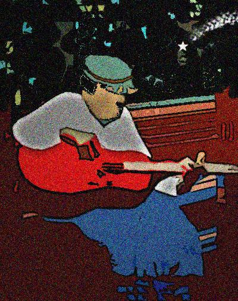

Alan Wickes

I Think of Dean Moriarty...
Re-reading Jack in Languedoc, trucks thunder
along “La Provencal” from Southern Spain
to Northern Italy, then back again —
Cadiz/Milan, Milan/Cadiz. I wonder
at my hypocrisy — so torn asunder
by wanderlust, yet opting to remain
domesticated. Blessed by the mundane,
a bourgeois life still seems my biggest blunder.
Blind drunk, the bar-room bore: “Last night I dreamt
Babe Rawlins lay with me.” (What can be worse
than rat-arsed Geordie blues?) “Last night I dreamt....
Before my coup de grace, the second verse,
the barman grabbed my beat-up blues guitar.
I sang outside. I watched a shooting star.
“A” Roads
Pre-easyJet they linked unlikely places —
Bodmin to Mansfield, via Tewkesbury;
meandering through England’s crowded spaces,
mementos of an age unused to hurry.
Perhaps it’s all a myth — that RAC’s
roadside patrols saluted passersby;
content inside their Hillmans, smiling families
sipped tea; lay-bys were litter-free; July,
though blustery, seemed sunny. Now up-graded
to would-be motorways, sat-nav defined,
a two lane stretch comes as a shock. A faded
re-collection flashes though my mind:
A sunset I once glimpsed near Graverly Hill —
Lost Highways? No, but roads to freedom still.
Alan Wickes was born and raised in Northumberland. He studied History of Art and English at Manchester and Open University. He now works as a manager in Further Education. He is married, with three children, and lives in Buxton, Derbyshire, a spa town in the Pennines. Over the past seven years he has become particularly interested in writing metrical verse which adapts contemporary themes and diction to formal verse settings. Alan Wickes is a moderator at Sonnet Central, an on-line poetry workshop dedicated the development of the sonnet form and regularly contributes to Eratosphere. He has had work accepted by Znine, Loch Raven Review, Worm, Envoi and Aesthetica. Alan's sonnet, Barcelona, won best sonnet in Ware Poets national competition in 2004. Cannon Poets awarded first prize to his poem 'Parting Shots' in November 2006. In November 2007 his chapbook, Prospero at Breakfast was published by Modern Metrics.
|